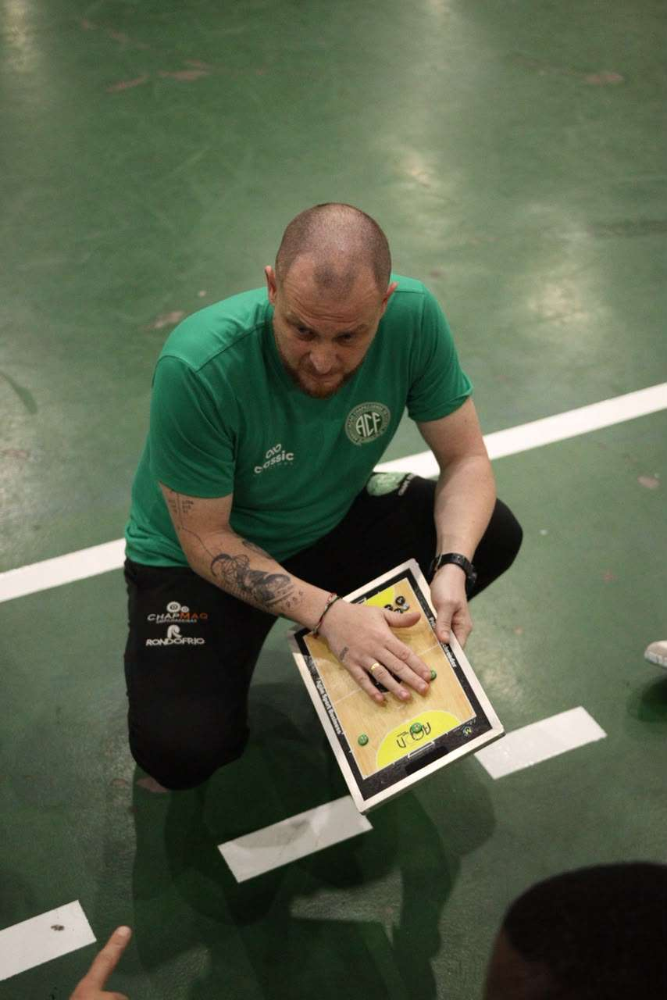
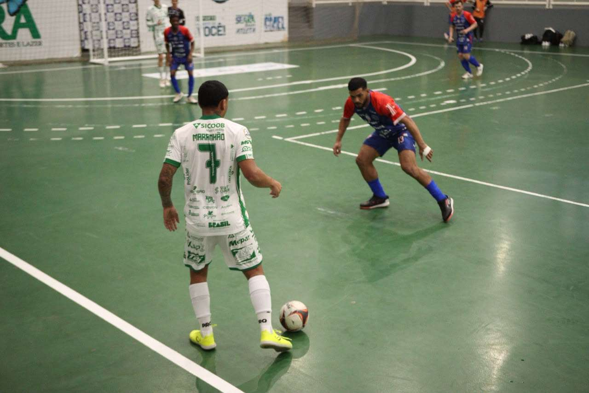
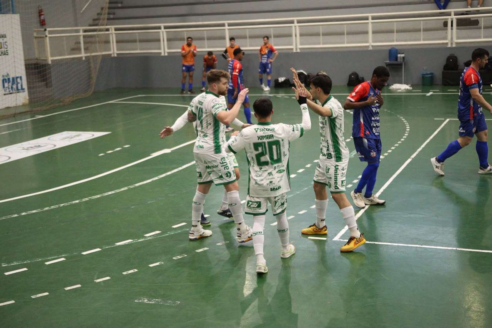

Representando Chapecó, o time da Associação Chapecoense de Futsal jogou na tarde desta quinta-feira (17) pela segunda rodada da fase regional dos Jogos Abertos de Santa Catarina. O Verdão das Quadras venceu Cunha Porã por 4 a 1 e deu um passo importante rumo à classificação para o mata-mata. O torneio de futsal masculino na etapa Oeste é disputado no Ginásio Carecão, em Seara.

A vitória foi encaminhada no primeiro tempo. Trentin abriu o placar para a Chape Futsal. Na sequência, Tutu, Samuka e Fael balançaram as redes. Dudu descontou na segunda etapa. Com o resultado, a equipe do técnico Leo Schroeder chegou a dois triunfos e soma seis pontos, mantendo a liderança do grupo B. Chapecó volta a atuar pelo regional dos JASC nesta sexta (18), às 17h, diante de Arabutã, pela última rodada.

O objetivo da Chapecoense é garantir uma das duas melhores campanhas na fase de grupos para se garantir diretamente na semifinal. A competição em Seara distribui três vagas para a etapa estadual dos JASC.

Crédito das fotos: Chape Futsal